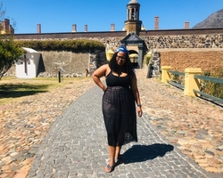

Bomkazi Masentile

Which City?
China
It is one of the largest countries in the world, China boasts incredibly diverse landscapes. Virtually whatever scenery you find most beautiful, you will find it in China. From the Northwest deserts to the Southeast seacoast, high mountain ranges to fertile plains, the frozen beauty of Harbin to the lush warm tropics of Xishuangbanna, China has it all. Hangzhou is famous for its stunning West Lake views.
Foreign Language
| English phrase | Foreign phrase |
|---|---|
| I am hungry | Estoy hambrient |
| I am learning to say no | Estoy eprendiendoa decir que no | She is really agly | ella es realmente fea |
City Hall

- The Slave Lodge is one of the oldest buildings in Cape Town.
- The building was used as a slave lodge until 1811 when it was changed into government offices by the new British colonial authorities.
- Slave Lodge housed the slaves who belonged to the Dutch East India Company (VOC)
Castle Of Good

- The first stone was laid on 2 January 1666 and it was completed by April 1679
- The materials used to build the Castle were local and included rock cut from the granite outcrop on Signal Hill, and blue slate and shells – transported from Robben Island
- In 1936 the Castle of Good Hope was declared a national monument
District Six Museum

- District Six Museum Foundation was established in 1989. In 1994, the District Six Museum came into being.
- The Museum is committed to telling the stories of forced removals, and assisting in the reconstitution of the community of District Six and Cape Town by drawing on a heritage of non-racialism, non-sexism, anti-class discrimination and the encouragement of debate
- The District Six Museum is a heritage project in itself.